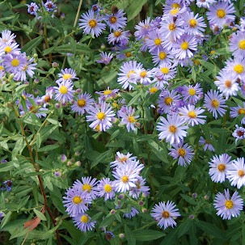
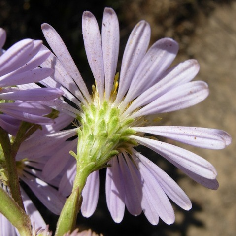

Symphyotrichum chilense
Common name
Pacific Aster
Family
Asteraceae
Family common name
Sunflowers, Daisies, Asters, and Allies Family
Blooms
June - November
Habitat
Meadows, open areas.
Recognition
.
Range Map
OR Flora